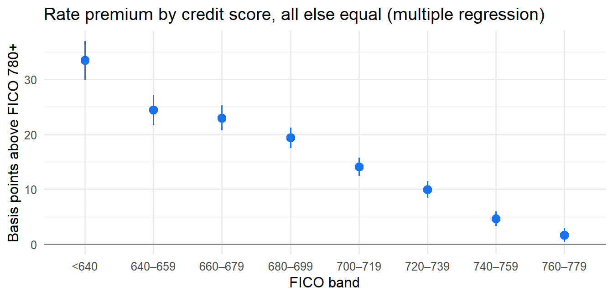
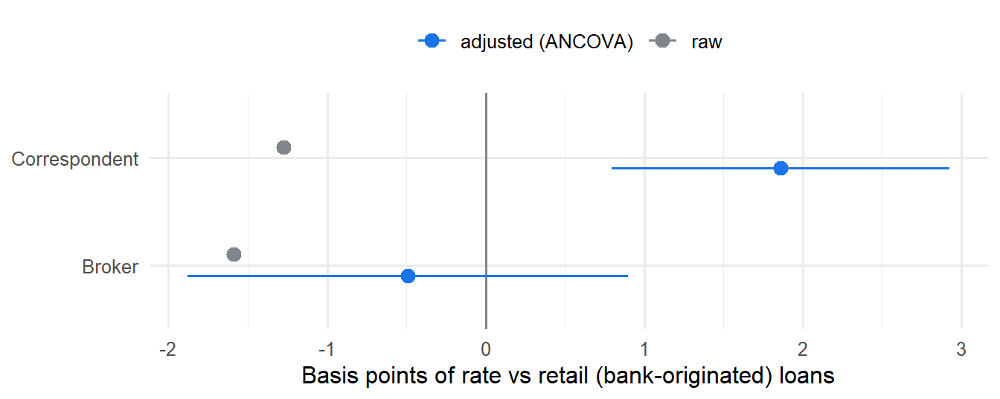

Do mortgage brokers charge more?
What sets the interest rate on a US mortgage: nonparametric tests, linear regression, ANCOVA and MANCOVA on 46,000 loans originated in 2024
November 2026 · R · Teaching case and portfolio project · Code · Data: Freddie Mac Single-Family Loan-Level Dataset
Author’s note. This is the running case study of the Nonparametric and Regression Models course I teach at the Facultad de Ciencias, UNAM (syllabus 1639). Each chapter answers part of the question with one unit of the syllabus: nonparametric tests, simple regression, multiple regression and model selection, ANOVA and ANCOVA. The chapters are in Spanish (links below); this page summarises them.
Data
46,190
30-year mortgages with first payment Mar 2024 – Feb 2025 (Freddie Mac)
Brokers vs retail
-0.5 bp
same month and risk profile; 95% CI -1.9 to +0.9 bp (Dunnett)
FICO 660–679 vs 780+
+23 bp
about $46 a month on a $300k loan
Biggest driver
the month
22% partial R², more than any borrower characteristic
The question
Two people take out the same mortgage in the same month. One has an excellent credit history, the other an average one; one goes straight to a bank, the other through a broker. Do they pay the same rate? Two questions, answered with the 50,000-loan 2024 sample that Freddie Mac publishes:
- How much more does a borrower with a weaker credit score pay, all else equal?
- Do brokers charge more than retail lenders, for the same risk?
Answer 1: a weaker score costs up to a third of a point
Comparing loans locked in the same month, with the same down payment, purpose and occupancy, a FICO of 660–679 pays about 23 basis points more than a FICO of 780 or above (roughly $46 a month on a $300,000 loan). The penalty is gradual and non-linear: almost nothing between 760 and 779, a third of a point below 640.
The borrower’s score is not the main driver, though. The month the rate was locked explains 22% of the variation the other variables leave unexplained: the median rate swung from 6.12% to 7.12% during the year. Investment properties and second homes pay about half a point more, and cash-out refinances about 0.3 points more.
Answer 2: no, brokers do not charge more on average

- Brokers: -0.5 bp vs retail (95% CI -1.9 to +0.9). The interval rules out an average premium of more than about 1 bp, under $2 a month.
- Correspondents charge slightly more: +1.9 bp (95% CI 0.8 to 2.9): statistically clear, economically small.
- The raw comparison points the wrong way for correspondents. Unadjusted, they look 1.3 bp cheaper, because retail lenders write twice as many cash-out refinances, which carry a higher rate. Comparing groups without adjusting can reverse the answer.
- The gap is not identical for everyone: brokers are a few basis points cheaper for prime borrowers (FICO 740+) and a few more expensive in the mid range (660–739).
Beyond the rate: MANOVA and MANCOVA
A loan is a package, not just a rate. Testing rate, loan-to-value, debt-to-income and loan size jointly (MANOVA, Pillai’s trace, with all four statistics also computed by hand from the eigenvalues of \(\mathbf{E}^{-1}\mathbf{H}\)), the channels clearly differ, but the effect is small and the rate is not where they differ:
- Follow-up ANOVAs (Bonferroni) and a canonical discriminant analysis show that 98% of the separation comes from loan size and down payment.
- A MANCOVA adjusting for credit score and month gives the same answer: broker loans are about 25% larger, with 3.5 more points of LTV and 1.4 more of DTI, at the same rate.
Brokers do not charge more; they serve a different kind of loan.
What makes the analysis trustworthy
- Nonparametric first. Rates are discrete and heaped: 76% sit on the 1/8-point grid and most of the rest end in .99 or .49, so normality tests fail and rank-based tests (Mann–Whitney, Kruskal–Wallis, Fligner–Killeen) come first. With 46,000 loans, several tests are “significant” for differences of zero or one basis point; every result is reported as an effect size.
- Data checks with the right test. McNemar’s test on “LTV above 80” vs “has mortgage insurance” finds a few inconsistent loans, and the same near-identity later shows up as severe multicollinearity (generalised VIF of 14.8) if both enter the model.
- Form of the relationship. Within a single month a straight line in FICO is adequate (lack-of-fit F test, AIC); with the full year and month adjustment, score bands fit clearly better: more data reveals shape.
- Assumptions checked, not assumed. Breusch–Pagan rejects constant variance, so results are confirmed with HC3 robust standard errors; homogeneity of slopes is tested before reading an ANCOVA; conclusions hold with extra controls and in the most homogeneous segment.
- What the data cannot say. The dataset records the rate, not fees or discount points, so the answer is “same rate”, not “same total cost”; and channel choice is not random, so the adjusted gap is an association, not a causal effect.
The chapters (in Spanish)
| Chapter | Syllabus unit | What it finds | |
|---|---|---|---|
| 0 | The question | — | The data, the two questions, why a raw comparison is not enough |
| 1 | Nonparametric tests | 1 | Binomial, sign, McNemar, Cox–Stuart, Mann–Whitney, Kruskal–Wallis, Fligner, goodness of fit, contingency tables |
| 2 | Simple linear regression | 2.1–2.2 | Least squares by hand, Gauss–Markov, MLE, confidence vs prediction intervals, residuals, lack-of-fit F test, matrix form |
| 3 | Multiple regression and model selection | 2.3–2.4 | Matrix estimation, leverage and Cook’s distance, robust SEs, general linear test, partial R², multicollinearity, stepwise AIC/BIC, cross-validation |
| 4 | ANOVA and ANCOVA | 2.5–2.6 | One- and two-way ANOVA, Welch, Tukey, ANCOVA, homogeneity of slopes, adjusted means, robustness: the answer |
| 5 | MANOVA and MANCOVA | beyond (Multivariate Analysis) | Wilks, Pillai, Hotelling–Lawley and Roy by hand, multivariate normality, Box’s M, Bonferroni follow-ups, canonical discriminant analysis, MANCOVA |
Data: the loan-level data are not included (Freddie Mac’s terms allow publishing research results, not the data); no individual loan is shown anywhere. Freddie Mac provides the dataset “as is” and does not endorse this analysis.
Skills shown: nonparametric inference · linear regression and diagnostics · general linear hypothesis · multicollinearity · model selection and cross-validation · ANOVA, ANCOVA, MANOVA and MANCOVA · discriminant analysis · robust standard errors · effect sizes vs significance · R
Code: MIT License. Aaron Mauricio Gómez Jiménez · LinkedIn · ORCID